library(tidyverse)
library(cowplot)
library(ggpubr)
library(pheatmap)
library(RColorBrewer)
library(vegan)
library(reshape2)
library(corrplot)
library(kableExtra)
library(agricolae)
# 设置默认主题
theme_set(theme_bw())12 分组数据分析实战
在这一部分，将以 (Gao et al. 2021)论文中的数据分析为例，展示分组数据分析和可视化的重复性研究。首先，我们简单介绍一下论文的研究背景、方法和主要结果。然后，使用原始数据进行可重复研究，通过复现论文中的图片，展示分组数据分析和可视化的重复性研究。
12.1 论文研究概述
12.1.1 研究背景
- 细菌共培养（coculture）广泛用于微生物生态学研究
- 初始接种比例是关键实验参数，影响微生物群落结构与功能
- 研究目标：探究初始接种比例如何调控共培养系统的最终结构与代谢能力
12.1.2 研究方法
- 选取 大肠杆菌 (E. coli K-12) 与 荧光假单胞菌 (P. putida KT2440) 作为共培养模型
- 在 71 种不同碳源条件下培养，初始比例从 1:1000 到 1000:1
- 通过比色法 (Biolog GEN III) 评估碳源利用率 (CUE)
- 通过 qPCR 测定共培养中两种菌的相对丰度
12.1.3 主要结果
12.1.3.1 初始接种比例影响最终菌群结构
- 在 59/71 种碳源 中，不同初始比例导致最终比例显著不同
- 但最终比例 并非完全由初始比例决定
- 碳源偏好性 对最终比例影响较大
12.1.3.2 初始比例调控共培养的代谢能力
- 1:1 和 1000:1 共培养 在 14 种碳源上表现出 更高的代谢能力
- 1:1000 共培养 代谢能力较弱，与单菌培养相似
- 可能机制：物种间 代谢共生 (metabolic coupling) 仅在特定初始比例下被触发
12.1.3.3 初始比例和碳源共同决定菌间相互作用
- 1:1000 共培养：主要为 负相互作用（62%）
- 1:1 和 1000:1 共培养：更易形成 正相互作用（46% 和 30%）
- 代谢互补性 可能依赖于足够数量的两种菌共存
12.1.4 研究结论
- 初始接种比例不仅影响共培养实验的 可重复性，还可能 改变微生物相互作用模式
- 碳源可调节初始比例对最终群落结构和功能的影响
- 该研究为微生物群落的可控构建提供了新的思路
12.2 数据准备
论文的原始数据及分析代码都在 GitHub 上。首先，使用 Git 命令将代码克隆到本地：
git clone https://github.com/gaospecial/ratio.git --depth 112.3 加载所需的R包
12.4 数据处理
原始数据存储在 data 文件夹中。数据主要来自两个实验:一个是使用 eco-plate 的 BIOLOG 标准测定,另一个是物种特异性的 qPCR 测定。原始数据以格式化的形式提供。
biolog <- read_csv("ratio/data/biolog.csv")
qPCR_data <- read_csv("ratio/data/qPCR.csv")
mono_data <- read_csv("ratio/data/mono.csv")
head(biolog)# A tibble: 6 × 5
ratio0 plate carbon_id A590 A750
<chr> <dbl> <dbl> <dbl> <dbl>
1 equal 1 1 0.191 0.138
2 equal 1 2 0.344 0.181
3 equal 1 3 1.37 0.561
4 equal 1 4 1.25 0.778
5 equal 1 5 0.191 0.137
6 equal 1 6 0.259 0.142head(qPCR_data)# A tibble: 6 × 6
ratio0 plate carbon_id EC PP ratio1
<chr> <dbl> <dbl> <dbl> <dbl> <dbl>
1 less 1 10 177416. 175245243. 0.00101
2 less 1 11 239521. 148368132. 0.00161
3 less 1 12 29837437. 142288704. 0.210
4 less 1 13 645563. 162324668. 0.00398
5 less 1 14 52481. 142197847. 0.000369
6 less 1 15 164023932. 156667034. 1.05 head(mono_data)# A tibble: 6 × 4
plate carbon_id EC PP
<dbl> <dbl> <dbl> <dbl>
1 1 1 10455221. 198817093.
2 1 2 59042727. 11468217.
3 1 3 54167912. 69902664.
4 1 4 61019235. 97434837.
5 1 5 14130781. 71788638.
6 1 6 5894491. 70394115.数据列说明:
ratio0: 初始比例,表示培养物的名称。“none”、“less”、“equal”、“more”、“all” 分别代表铜绿假单胞菌单培养、1:1000(大肠杆菌/铜绿假单胞菌,下同)、1:1、1000:1 共培养和大肠杆菌单培养。plate: 实验重复。A590: BIOLOG 工作站报告的 590 nm 吸光度,在本研究中作为碳源利用效率(CUE)的测量值。A750: BIOLOG 工作站报告的 750 nm 吸光度。carbon_id: 碳源的编号。从1-72,其中1是阴性对照。下面的变量carbon_name显示了每种碳源的名称。EC: 共培养中大肠杆菌的数量PP: 共培养中铜绿假单胞菌的数量
carbon_name <- read_csv("ratio/data/carbon.csv")
head(carbon_name)# A tibble: 6 × 2
carbon_id carbon_source
<dbl> <chr>
1 2 Dextrin
2 3 D-Maltose
3 4 D-Trehalose
4 5 D-Cellobiose
5 6 Gentiobiosse
6 7 Sucrose 大肠杆菌和铜绿假单胞菌的 qPCR 引物具有特异性(见Figure 12.1)。
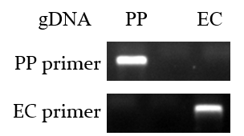
12.5 原始数据处理
qPCR 定量数据处理:
mono_data <- mono_data %>% melt(id.vars=c("plate","carbon_id"),variable.name ="Target.Name",value.name="Quantity_mono")
cocu_data <-qPCR_data %>% select(plate,carbon_id,ratio0,EC,PP) %>% melt(id.vars=c("plate","carbon_id","ratio0"),variable.name ="Target.Name",value.name="Quantity_cocu")
data_all <- merge(mono_data, cocu_data, by = c("carbon_id","Target.Name","plate"),all=T) %>% filter(carbon_id!="1")通过减去每个平板中阴性对照的值来标准化 A590:
qPCR_data <- qPCR_data %>%
mutate(ratio0 = factor(ratio0, levels = c("less","equal","more")))
# 标准化
biolog_24h <- biolog %>%
mutate(ratio0 = factor(ratio0, levels = c("none","less","equal","more","all"))) %>%
group_by(plate,ratio0) %>%
mutate(A590=A590-A590[carbon_id==1],A750=A750-A750[carbon_id==1]) %>% # 将阴性对照设为零
filter(carbon_id!=1) %>%
ungroup()
biolog_mono_24h <- biolog_24h %>%
filter(ratio0 %in% c("none","all")) %>%
mutate(species=factor(ratio0,levels = c("all","none"),labels = c("E. coli","P. putida"))) %>%
dplyr::select(-ratio0)
biolog_coculture_24h <- biolog_24h %>%
filter(ratio0 %in% c("less","equal","more")) %>%
mutate(ratio0 = factor(ratio0, levels = c("less","equal","more")))12.6 本研究使用的碳源
本研究使用了71种不同的碳源。首先,我们需要将它们分组或聚类成不同的子组。在本研究中,我们使用了两种方法来实现这一点。
12.6.1 碳源聚类
首先,通过所有培养物中的 A590 值对碳源进行聚类。这就是我们所说的”使用组”。使用R中的 hclust() 方法生成了三个使用组,分别命名为 U1、U2 和 U3。
M_A590_24h <- biolog_24h %>% mutate(sample=paste(ratio0,plate,sep="-")) %>%
dplyr::select(sample,carbon_id,A590) %>%
spread(key=sample,value=A590) %>%
as.data.frame() %>%
tibble::column_to_rownames(var="carbon_id")
k3 <- cutree(hclust(dist(M_A590_24h)),k=3)
carbon_group <- data.frame(usage=k3) %>%
rownames_to_column(var="carbon_id") %>%
mutate(carbon_id=as.numeric(carbon_id)) %>%
mutate(usage=paste("U",usage,sep=""))
carbon_name <- left_join(carbon_name, carbon_group)12.6.2 定义碳源偏好性
其次,通过比较大肠杆菌和铜绿假单胞菌单培养中的 A590 值来确定碳源偏好性。
biolog_mono_A590_24h <- biolog_mono_24h %>%
dplyr::select(plate,carbon_id,species,A590) %>%
spread(species,A590)
PP_prefered <- biolog_mono_A590_24h %>%
group_by(carbon_id) %>%
summarise(p=t.test(`P. putida`,`E. coli`,alternative = "greater")$p.value) %>%
filter(p<0.05)
EC_prefered <- biolog_mono_A590_24h %>%
group_by(carbon_id) %>%
summarise(p=t.test(`P. putida`,`E. coli`,alternative = "less")$p.value) %>%
filter(p<0.05)
carbon_prefer <- data.frame("carbon_id"=carbon_name$carbon_id,
"prefer"="None",
stringsAsFactors = F)
carbon_prefer[carbon_prefer$carbon_id %in% EC_prefered$carbon_id,"prefer"] <- "EC"
carbon_prefer[carbon_prefer$carbon_id %in% PP_prefered$carbon_id,"prefer"] <- "PP"
carbon_name <- left_join(carbon_name, carbon_prefer)在大肠杆菌偏好的碳源中,大肠杆菌的 CUE 在统计学上显著高于铜绿假单胞菌,而在铜绿假单胞菌偏好的碳源中,铜绿假单胞菌的 CUE 在统计学上显著高于大肠杆菌。
更多信息请参见Figure 12.7。
12.6.3 碳源汇总
Table 12.1列出了本研究使用的所有71种碳源。
carbon_name %>%
left_join(carbon_prefer) |>
kableExtra::kable()| carbon_id | carbon_source | usage | prefer |
|---|---|---|---|
| 2 | Dextrin | U1 | EC |
| 3 | D-Maltose | U2 | EC |
| 4 | D-Trehalose | U2 | EC |
| 5 | D-Cellobiose | U1 | None |
| 6 | Gentiobiosse | U1 | EC |
| 7 | Sucrose | U1 | None |
| 8 | D-Turanose | U1 | None |
| 9 | Stachyose | U1 | None |
| 10 | D-Raffinose | U1 | None |
| 11 | α-D-Lactose | U1 | None |
| 12 | D-Melibiose | U1 | EC |
| 13 | β-Methyl-D-Glucoside | U1 | None |
| 14 | D-Salicin | U1 | None |
| 15 | N-Acetyl-D-Glucosamine | U2 | None |
| 16 | N-Acetyl-β-Dmannosamine | U1 | None |
| 17 | N-Acetyl-D-Galactosamine | U1 | None |
| 18 | N-AcetylNeuraminic Acid | U2 | EC |
| 19 | α-D-Glucose | U3 | PP |
| 20 | D-Mannose | U2 | PP |
| 21 | D-Fructose | U2 | EC |
| 22 | D-Galactose | U1 | EC |
| 23 | 3-MethylGlucose | U1 | None |
| 24 | D-Fucose | U1 | PP |
| 25 | L-Fucose | U2 | EC |
| 26 | L-Rhamnose | U1 | EC |
| 27 | Inosine | U2 | None |
| 28 | D-Sorbitol | U1 | EC |
| 29 | D-Mannitol | U2 | EC |
| 30 | D-Arabitol | U1 | None |
| 31 | myo-Inositol | U1 | None |
| 32 | Glycerol | U1 | None |
| 33 | D-Glucose-6-PO4 | U2 | EC |
| 34 | D-Fructose-6-PO4 | U2 | EC |
| 35 | D-Aspartic Acid | U1 | None |
| 36 | D-Serine | U2 | EC |
| 37 | Gelatin | U1 | None |
| 38 | Glycyl-L-Prolin | U1 | EC |
| 39 | L-Alanine | U3 | PP |
| 40 | L-Arginine | U3 | PP |
| 41 | L-Aspartic Acid | U3 | PP |
| 42 | L-Glutamic | U3 | PP |
| 43 | L-Histidine | U3 | PP |
| 44 | L-Pyroglutamic | U3 | PP |
| 45 | L-Serine | U1 | None |
| 46 | Pectin | U1 | EC |
| 47 | D-Galacturonic Acid | U3 | PP |
| 48 | L-Galactonic Acid Lactone | U2 | EC |
| 49 | D-Gluconic | U2 | PP |
| 50 | D-Glucuronic | U3 | PP |
| 51 | Glucuronamid | U1 | PP |
| 52 | Mucic Acid | U3 | PP |
| 53 | Quinic Acid | U3 | PP |
| 54 | D-Saccharic | U3 | PP |
| 55 | p-Hydroxy-Phenylacetic Acid | U1 | PP |
| 56 | Methyl Pyruvate | U1 | PP |
| 57 | D-Lactic Acid Methyl Ester | U1 | None |
| 58 | L-Lactic Acid | U3 | PP |
| 59 | Citric Acid | U3 | PP |
| 60 | α-Keto-Glutaric Acid | U1 | PP |
| 61 | D-Malic Acid | U1 | None |
| 62 | L-Malic Acid | U3 | PP |
| 63 | Bromo-Succinic | U1 | PP |
| 64 | Tween 40 | U1 | None |
| 65 | y-Amino-ButryricAcid | U3 | PP |
| 66 | α-Hydroxy-ButyricAcid | U1 | None |
| 67 | β-Hydroxy-D,L-ButyricAcid | U1 | PP |
| 68 | α-Keto-ButyricAcid | U1 | None |
| 69 | Acetoacetic Acid | U1 | PP |
| 70 | Propionic Acid | U1 | PP |
| 71 | Acetic Acid | U1 | None |
| 72 | Formic Acid | U1 | None |
12.7 定义社会互作
社会互作模型如Figure 12.2所示。
更多信息请参见Figure 12.7。
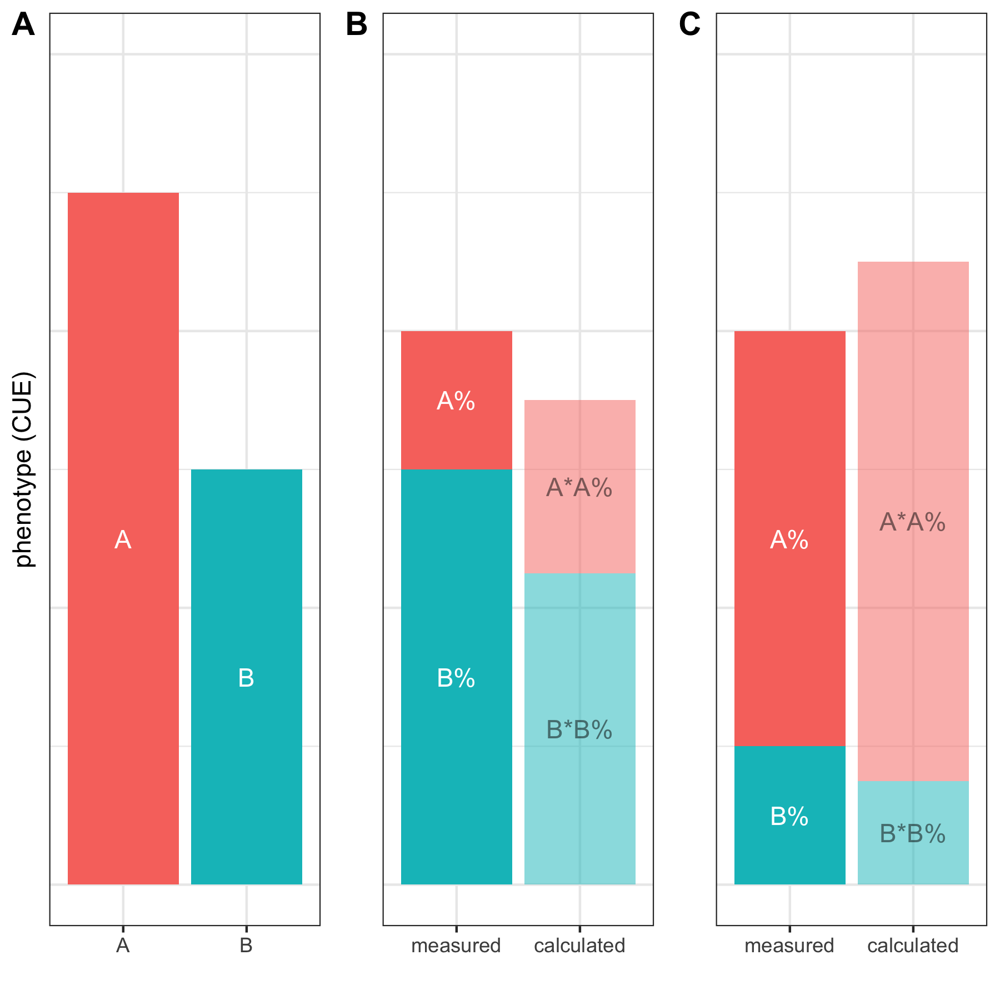
根据这个模型,我们可以得到每种培养物在特定碳源和初始比例下的互作模式。
ratio1 <- qPCR_data %>% filter(ratio0 %in% c("less","equal","more")) %>%
complete(ratio0,carbon_id,plate) %>%
group_by(ratio0,carbon_id) %>%
dplyr::select(ratio0,plate,carbon_id,ratio1) %>%
mutate(ratio1_mean=mean(ratio1,na.rm = T)) %>%
mutate(ratio1=ifelse(is.na(ratio1),ratio1_mean,ratio1)) %>%
dplyr::select(-ratio1_mean)
mono_A590 <- biolog_mono_24h %>%
group_by(carbon_id,species) %>%
summarise(A590=mean(A590)) %>%
spread(key="species",value="A590")
A590_caculated <- left_join(ratio1,mono_A590) %>%
mutate(A590_cac=(`P. putida`+ratio1*`E. coli`)/(1+ratio1))
social <- biolog_coculture_24h %>% dplyr::select(plate,carbon_id,ratio0,A590) %>%
left_join(A590_caculated) %>%
group_by(carbon_id,ratio0) %>%
mutate(p_pos=t.test(x=A590,y=A590_cac,alternative = "greater")$p.value,
p_neg=t.test(x=A590,y=A590_cac,alternative = "less")$p.value) %>%
mutate(social_type=ifelse(
p_pos<0.05,"+",
ifelse(p_neg<0.05,"-","unresolved"))
) %>%
ungroup() %>%
dplyr::select(carbon_id,ratio0,social_type,p_pos,p_neg) %>%
unique() %>%
mutate(ratio0=factor(ratio0,levels = c("less","equal","more")))
table(social$social_type) %>% barplot(col=c("blue","red","grey"))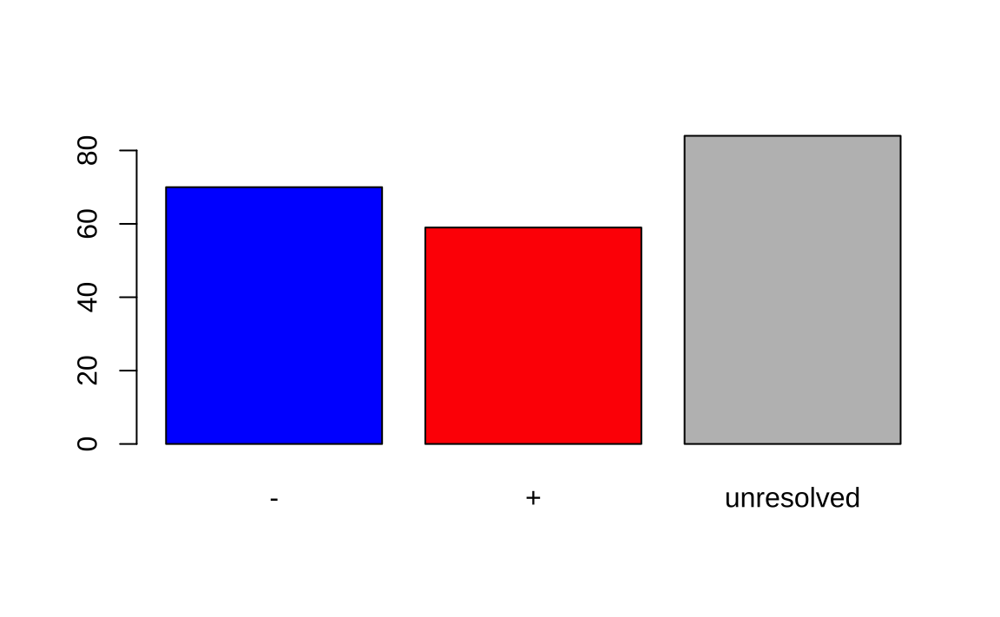
最终,我们得到了70个负互作、59个正互作和84个未解析的互作模式。
基于单培养和共培养两种菌的吸光度来定义社会互作。
social_qpcr <- data_all %>%
group_by(carbon_id,Target.Name,ratio0) %>%
summarise(p_pos=t.test(x=log10(Quantity_cocu),y=log10(Quantity_mono),alternative = "greater")$p.value,
p_neg=t.test(x=log10(Quantity_cocu),y=log10(Quantity_mono),alternative = "less")$p.value) %>%
mutate(social_type=ifelse(
p_pos<0.05,"+",
ifelse(p_neg<0.05,"-","unresolved"))
) %>% ungroup() %>%
mutate(ratio0=factor(ratio0,levels = c("less","equal","more")))
table(social_qpcr$social_type) %>% barplot(col=c("blue","red","grey"))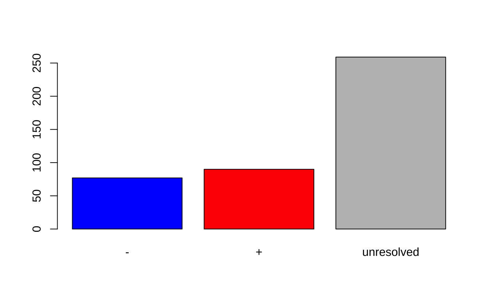
12.8 数据探索
现在我们有了多个参数,包括初始比例(ratio0)和最终比例(ratio1)、共培养中大肠杆菌和铜绿假单胞菌的数量(EC和PP)、CUE(A590)、碳源对大肠杆菌和铜绿假单胞菌的偏好性,以及如Figure 12.2所述计算的社会互作模式(social_type)。
我们将所有这些数据合并到R中的一个数据框中,并进行如下统计分析。
merged <- left_join(biolog_coculture_24h,qPCR_data) %>%
left_join(social) %>%
left_join(carbon_name) %>%
filter(!is.na(ratio1))包含基于绝对密度定义的社会行为的总数据:
social_qpcr <- social_qpcr %>% select(social_type,carbon_id,ratio0)
merged_qpcr <- qPCR_data %>%
left_join(social_qpcr) %>%
left_join(carbon_name) %>%
filter(!is.na(ratio1)) %>% mutate(social_type=factor(social_type,levels = c('unresolved','+','-'))) %>% mutate(prefer=factor(prefer,levels = c('none','EC','PP')))
merged_qpcr$EC <- log10(merged_qpcr$EC)
merged_qpcr$PP <- log10(merged_qpcr$PP)12.8.1 数据标准化
运行几个分析需要数据呈正态分布,因此,我们探索了合并数据中观察数据的正态性。根据数据值的偏度,我们用选定的方法转换原始数据。标准化后,可以看到所有关键变量大致符合正态分布。
merged <- merged %>% filter(ratio0 %in% c("less","equal","more"))
par(mfrow=c(3,4))
hist(merged$EC)
qqnorm(merged$EC)
hist(log10(merged$EC))
qqnorm(log10(merged$EC))
hist(merged$PP)
qqnorm(merged$PP)
hist(log10(merged$PP))
qqnorm(log10(merged$PP))
hist(merged$ratio1)
qqnorm(merged$ratio1)
hist(log10(merged$ratio1))
qqnorm(log10(merged$ratio1))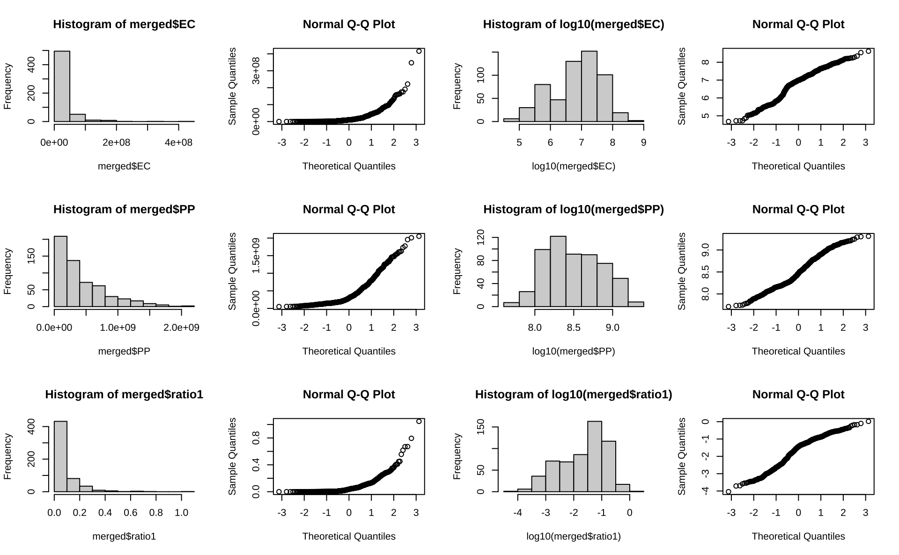
因此,我们对大肠杆菌(EC)和铜绿假单胞菌(PP)的数量进行对数转换,对A590值进行平方根转换。
merged <- merged %>%
# mutate_at(c("A590"),sqrt) %>%
mutate_at(c("EC","PP","ratio1"),log10)此外,我们优化了分组变量的参考水平。例如,初始比例的基准水平设置为”equal“,即大肠杆菌和铜绿假单胞菌的1:1。social_type的基准水平是”unresolved“,usage的基准水平是”U1“,prefer的基准水平是”None“。
merged$ratio0 <- relevel(merged$ratio0,"equal")
merged$social_type <- as_factor(merged$social_type)
merged$social_type <- relevel(merged$social_type,"unresolved")
merged$usage <- as_factor(merged$usage)
merged$usage <- relevel(merged$usage, "U1")
merged$prefer <- as_factor(merged$prefer)
merged$prefer <- relevel(merged$prefer,"None")12.8.2 CUE、细胞数量和最终比例的相关性
下图显示了三个因变量之间的相关性,这些变量是CUE(A590)、大肠杆菌(EC)和铜绿假单胞菌(PP)的数量,以及最终比例(ratio1)。CUE与铜绿假单胞菌的数量的相关性比与大肠杆菌数量的相关性更强,尽管两种相关性都很显著。此外,最终比例与大肠杆菌数量呈正相关,与铜绿假单胞菌数量呈负相关。另外,大肠杆菌和铜绿假单胞菌之间也存在相关性。
library(corrplot)
mat <- merged[c("A590","EC","PP","ratio1")]
res <- cor.mtest(mat, conf.level=0.95)
cor <- cor(mat)
corrplot(cor, type = "upper", sig.level = c(.001, .01, .05), pch.cex = .9, insig = "label_sig",
p.mat = res$p,
addCoef.col = "grey80",
diag = FALSE)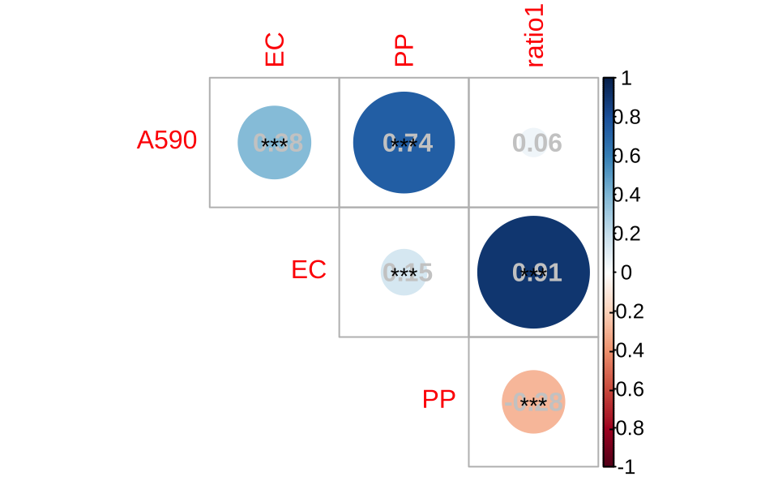
12.8.3 多元线性回归
我们使用多元线性回归来探索输入变量和输出变量之间的相关性。输入变量包括初始比例(ratio0)、碳源(按碳源偏好性(prefer)或使用组(usage)进一步聚类)。输出变量包括CUE(A590)、大肠杆菌(EC)和铜绿假单胞菌(PP)的数量,以及社会互作模式(social_type)。
data <- merged[,c("ratio0","usage","prefer","A590","EC","PP","ratio1","social_type")]首先,对碳源利用效率(CUE,即A590)与初始比例、碳源使用组、碳源偏好性进行回归。回归模型结果显示,根据调整后的R方(0.6782,p < 2.2e-16),可以解释68%的因变量变异。显著影响CUE(A590)的因素从强到弱依次是:碳源使用组(与U1碳源相比)、初始比例(ratio0,与1:1共培养相比)、互作类型(social_type+,与未解析互作模式相比)和碳源偏好性(与非偏好碳源相比)。此外,当其他参数受控时,将初始比例从1:1增加到1000:1或从1:1降低到1:1000,都会显著降低CUE。线性模型总结如下。
model <- lm(A590~ ratio0 + usage + prefer, data = data)
summary(model)
Call:
lm(formula = A590 ~ ratio0 + usage + prefer, data = data)
Residuals:
Min 1Q Median 3Q Max
-0.64818 -0.16779 0.00678 0.11771 1.33998
Coefficients:
Estimate Std. Error t value Pr(>|t|)
(Intercept) 0.21820 0.02503 8.717 < 2e-16 ***
ratio0less -0.33896 0.02686 -12.618 < 2e-16 ***
ratio0more -0.11341 0.02689 -4.218 2.88e-05 ***
usageU2 0.61723 0.03131 19.716 < 2e-16 ***
usageU3 0.57853 0.03487 16.589 < 2e-16 ***
preferEC 0.07031 0.03078 2.285 0.0227 *
preferPP 0.15645 0.03180 4.920 1.14e-06 ***
---
Signif. codes: 0 '***' 0.001 '**' 0.01 '*' 0.05 '.' 0.1 ' ' 1
Residual standard error: 0.248 on 560 degrees of freedom
Multiple R-squared: 0.6816, Adjusted R-squared: 0.6782
F-statistic: 199.8 on 6 and 560 DF, p-value: < 2.2e-16其次,研究了最终比例(ratio1)与输入变量之间的关系。该模型解释了64%的输入变量方差(调整后的R方 = 0.6389,p值 < 2.2e-16)。结果表明,最终比例与所有变量都显著相关。当其他参数受控时,大肠杆菌偏好的碳源(preferEC)是影响最终比例最重要的正向因素,其次是使用组U2(usageU2)。相比之下,ratio0less、usageU3、preferPP和ratio0more是从强到弱的负向影响因素。
model <- lm(ratio1 ~ ratio0 + usage + prefer, data = data)
summary(model)
Call:
lm(formula = ratio1 ~ ratio0 + usage + prefer, data = data)
Residuals:
Min 1Q Median 3Q Max
-1.82699 -0.32735 -0.00437 0.28300 2.04303
Coefficients:
Estimate Std. Error t value Pr(>|t|)
(Intercept) -1.26415 0.05038 -25.094 < 2e-16 ***
ratio0less -1.07556 0.05407 -19.894 < 2e-16 ***
ratio0more -0.12509 0.05412 -2.311 0.0212 *
usageU2 0.31661 0.06301 5.025 6.78e-07 ***
usageU3 -0.37956 0.07019 -5.408 9.47e-08 ***
preferEC 0.53330 0.06194 8.610 < 2e-16 ***
preferPP -0.16508 0.06400 -2.579 0.0102 *
---
Signif. codes: 0 '***' 0.001 '**' 0.01 '*' 0.05 '.' 0.1 ' ' 1
Residual standard error: 0.499 on 560 degrees of freedom
Multiple R-squared: 0.6427, Adjusted R-squared: 0.6389
F-statistic: 167.9 on 6 and 560 DF, p-value: < 2.2e-16同样,我们研究了铜绿假单胞菌(或大肠杆菌)的数量与输入变量之间的关系。
如下所示,该模型解释了59%的输入变量方差(R方 = 0.5904,p < 2.2e-16)。我们发现共培养中铜绿假单胞菌的数量从强到弱显著地与碳源和初始比例相关。值得注意的是,碳源使用组对CUE的影响比偏好性更强。有趣的是,当其他参数受控时,初始接种中大肠杆菌较多(more,1000:1)有助于增加铜绿假单胞菌的最终数量(与1:1初始比例相比)。相反,当其他参数受控时,初始接种中大肠杆菌较少(less,1:1000)会降低铜绿假单胞菌的最终数量(与1:1初始比例相比)。
model <- lm(PP~ ratio0 + usage + prefer, data = data)
summary(model)
Call:
lm(formula = PP ~ ratio0 + usage + prefer, data = data)
Residuals:
Min 1Q Median 3Q Max
-0.70041 -0.12984 0.00254 0.13517 0.68474
Coefficients:
Estimate Std. Error t value Pr(>|t|)
(Intercept) 8.27027 0.02282 362.394 < 2e-16 ***
ratio0less -0.06862 0.02449 -2.802 0.00526 **
ratio0more 0.05048 0.02452 2.059 0.03995 *
usageU2 0.36134 0.02854 12.660 < 2e-16 ***
usageU3 0.51540 0.03180 16.210 < 2e-16 ***
preferEC -0.02260 0.02806 -0.805 0.42096
preferPP 0.14206 0.02899 4.900 1.26e-06 ***
---
Signif. codes: 0 '***' 0.001 '**' 0.01 '*' 0.05 '.' 0.1 ' ' 1
Residual standard error: 0.2261 on 560 degrees of freedom
Multiple R-squared: 0.5947, Adjusted R-squared: 0.5904
F-statistic: 137 on 6 and 560 DF, p-value: < 2.2e-16该模型解释了70%的输入变量方差(R方 = 0.7047,p < 2.2e-16)。我们发现大肠杆菌的数量与初始比例呈负相关,而与碳源使用组U2(usageU2)、偏好碳源(preferEC)呈正相关。这些结果表明生态位条件是影响大肠杆菌数量的主要挑战。
model <- lm(EC~ ratio0 + usage + prefer, data = data)
summary(model)
Call:
lm(formula = EC ~ ratio0 + usage + prefer, data = data)
Residuals:
Min 1Q Median 3Q Max
-1.83058 -0.26505 -0.01877 0.25207 1.67502
Coefficients:
Estimate Std. Error t value Pr(>|t|)
(Intercept) 7.00611 0.04422 158.448 <2e-16 ***
ratio0less -1.14418 0.04745 -24.111 <2e-16 ***
ratio0more -0.07461 0.04750 -1.571 0.1168
usageU2 0.67795 0.05530 12.259 <2e-16 ***
usageU3 0.13584 0.06160 2.205 0.0279 *
preferEC 0.51070 0.05436 9.394 <2e-16 ***
preferPP -0.02301 0.05618 -0.410 0.6822
---
Signif. codes: 0 '***' 0.001 '**' 0.01 '*' 0.05 '.' 0.1 ' ' 1
Residual standard error: 0.438 on 560 degrees of freedom
Multiple R-squared: 0.7078, Adjusted R-squared: 0.7047
F-statistic: 226.1 on 6 and 560 DF, p-value: < 2.2e-16最后,我们使用多项式逻辑回归来研究影响社会互作的因素。
model <- nnet::multinom(social_type ~ ratio0 + usage + prefer, data = data)# weights: 24 (14 variable)
initial value 622.913168
iter 10 value 406.053003
iter 20 value 400.407045
final value 400.397415
convergedsummary(model)Call:
nnet::multinom(formula = social_type ~ ratio0 + usage + prefer,
data = data)
Coefficients:
(Intercept) ratio0less ratio0more usageU2 usageU3 preferEC preferPP
+ -0.95563691 -4.610907 -1.730681 2.558865 -0.7874184 3.0731151 1.4921352
- -0.06021649 1.118536 -1.511092 -1.567289 0.2229073 -0.4540912 -0.1812898
Std. Errors:
(Intercept) ratio0less ratio0more usageU2 usageU3 preferEC preferPP
+ 0.3351764 0.6170528 0.3383025 0.4632859 0.4500019 0.4316674 0.4307093
- 0.2545723 0.2911163 0.3208524 0.4530683 0.3646688 0.3775650 0.3361113
Residual Deviance: 800.7948
AIC: 828.7948 在比较正互作与未解析互作时,我们得到如下模型:
\[ ln(+/unresolved)= -0.96 - 4.61 * ratio0less - 1.73 * ratio0more + \\ 2.56* usageU2 - 0.79 * usageU3 + 3.07 * preferEC + 1.49 * preferPP \]
在所有输入变量中,usageU2(与usageU1相比)和preferEC(与prefernone相比)对正互作的影响最大,且都具有统计学显著性(见下文)。
在比较负互作与未解析互作时,我们得到如下模型:
\[ ln(-/unresolved) = -0.06 + 1.12 * ratio0less - 1.51 * ratio0more - \\ 1.57 * usageU2 + 0.22 * usageU3 - 0.45 * preferEC - 0.18 * preferPP \]
从这个模型中,我们了解到usageU2(与U1碳源相比)是影响负互作最重要的因素。其他显著因素是ratio0more、ratio0less和preferEC(见下文)。
rstatix::tidy(model) %>%
mutate(sig = cut(p.value, breaks = c(0,0.001,0.01,0.05,1),labels = c("***","**", "*", ""), include.lowest = TRUE)) %>%
mutate_at(c("estimate","std.error","statistic"), round, digits = 3) %>%
mutate_at("p.value", formatC, format = "e", digits = 1) %>%
kable()| y.level | term | estimate | std.error | statistic | p.value | sig |
|---|---|---|---|---|---|---|
| + | (Intercept) | -0.956 | 0.335 | -2.851 | 4.4e-03 | ** |
| + | ratio0less | -4.611 | 0.617 | -7.472 | 7.9e-14 | *** |
| + | ratio0more | -1.731 | 0.338 | -5.116 | 3.1e-07 | *** |
| + | usageU2 | 2.559 | 0.463 | 5.523 | 3.3e-08 | *** |
| + | usageU3 | -0.787 | 0.450 | -1.750 | 8.0e-02 | |
| + | preferEC | 3.073 | 0.432 | 7.119 | 1.1e-12 | *** |
| + | preferPP | 1.492 | 0.431 | 3.464 | 5.3e-04 | *** |
| - | (Intercept) | -0.060 | 0.255 | -0.237 | 8.1e-01 | |
| - | ratio0less | 1.119 | 0.291 | 3.842 | 1.2e-04 | *** |
| - | ratio0more | -1.511 | 0.321 | -4.710 | 2.5e-06 | *** |
| - | usageU2 | -1.567 | 0.453 | -3.459 | 5.4e-04 | *** |
| - | usageU3 | 0.223 | 0.365 | 0.611 | 5.4e-01 | |
| - | preferEC | -0.454 | 0.378 | -1.203 | 2.3e-01 | |
| - | preferPP | -0.181 | 0.336 | -0.539 | 5.9e-01 |
多元线性回归模型结果。
12.9 共培养的最终比例
我们使用ANOVA检验来揭示每种碳源中三种共培养的最终比例的差异。由于包含多重比较,使用”BH”方法对p值进行了调整。
aov_p <- compare_means(ratio1 ~ ratio0,
group.by = "carbon_id",
data=merged,
method = "anova",
p.adjust.method = "BH") %>%
arrange(p.adj) %>%
mutate(p.adj.signif = cut(p.adj,breaks = c(0,0.01,0.05,1),labels = c("**","*","ns"))) %>%
left_join(carbon_prefer)ANOVA检验的显著性在图2A中可视化,并在图2B和C中给出了显著和非显著结果的五个示例。此外,图2S中提供了71种不同碳源的所有检验结果。
12.10 图2A: 最终比例ANOVA检验p值的密度分布
p.cutoff <- 0.05
p1 <- ggplot(aov_p,aes(p.adj)) +
# geom_histogram(bins=30) +
geom_line(stat = "density",lwd=1) +
geom_density(lwd=0,color=NA,fill="lightblue") +
geom_vline(xintercept = p.cutoff,lwd=1,lty="dashed",color="firebrick") +
labs(x="P.adj",y="密度")+
geom_text(x=0.06,y=0,label=p.cutoff,
vjust="top",
hjust="left",
color="firebrick")
p2 <- ggplot(aov_p, aes(p.adj.signif,fill=prefer)) + geom_bar() +
labs(x="调整后p值的显著性",y="频数") +
# geom_text(aes(label=Freq),vjust=0,nudge_y = 1) +
scale_fill_discrete(breaks=c("None","EC","PP"),labels=c("无","大肠杆菌","铜绿假单胞菌"),name="偏好性") +
theme(legend.text = element_text(face="italic"),
legend.position = c(0.65,0.7))
library(grid)
vp <- viewport(width=0.3,height=0.6,x=0.7,y=0.5)
pushViewport(vp)print(p1)
print(p2,vp=vp)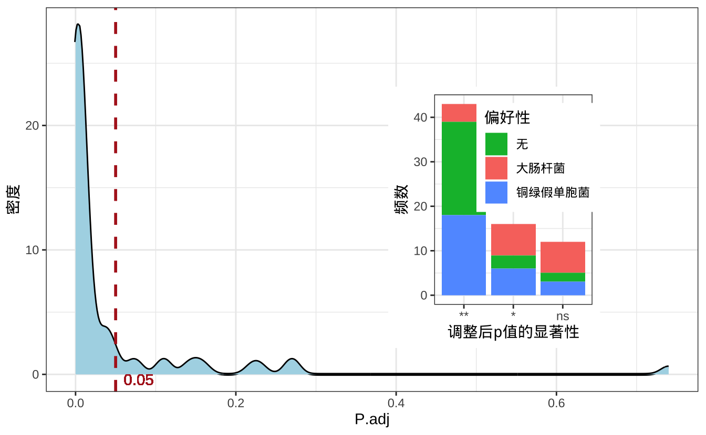
#ggsave("ratio/figures/figure 2A.tiff",path="ratio/figures")
#export::graph2ppt(file="ratio/figures.pptx",append=TRUE)12.11 图2B,C: 显著/非显著结果的示例
merged$ratio0 <- relevel(merged$ratio0, "less")
carbon_name_labeller <- function(x){
name_of <- carbon_name$carbon_source
names(name_of) <- carbon_name$carbon_id
return(as.character(name_of[x]))
}
selected_significant_carbon_id <- c(29,32,36,39,46)
selected_nonsignificant_carbon_id <- c(3,4,12,15,53)
p1 <- ggplot(
data=filter(merged,carbon_id %in% selected_significant_carbon_id) %>%
left_join(aov_p),
mapping = aes(ratio0,ratio1,color=prefer))
p2 <- ggplot(
data=filter(merged,carbon_id %in% selected_nonsignificant_carbon_id) %>%
left_join(aov_p),
mapping = aes(ratio0,ratio1,color=prefer))
plots <- lapply(list(p1,p2),function(x){
x + geom_boxplot() + geom_jitter() +
geom_text(aes(x="equal", y=0.15,label= paste("p.adj=",p.adj,sep = "")),check_overlap = T,size=3,show.legend = FALSE) +
geom_text(aes(x="less",y=.65,label=carbon_id),color="grey",size=3) +
facet_wrap(~carbon_id,
ncol=5,
labeller = labeller(carbon_id=carbon_name_labeller)) +
# stat_compare_means(method="aov") +
scale_x_discrete(breaks=c("less","equal","more"),labels=c("1:1000","1:1","1000:1")) +
theme(axis.text.x = element_text(angle = 60, hjust = 1,vjust = 1)) +
scale_color_discrete(breaks=c("None","EC","PP"),labels=c("无","大肠杆菌","铜绿假单胞菌"),name="偏好性")+
theme(legend.text = element_text(face="italic")) +
labs(x="",y="最终比例 (EC/PP)")
})
plot_grid(plotlist = plots,ncol=1,labels=c("B","C"))
#ggsave("ratio/figures/figure 2.tiff",path="ratio/figures")
#export::graph2ppt(file="ratio/figures.pptx",append=TRUE)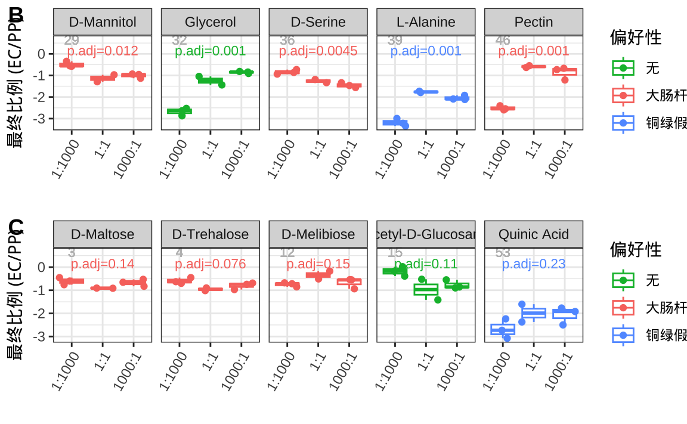
12.12 图 S2: 所有培养的最终比例
最终比例的完整图示。
ggplot(merged %>% left_join(aov_p),aes(ratio0,ratio1,color=prefer)) + geom_boxplot() +
geom_text(aes(x="less",y=.75,label=paste0(carbon_id,"(p=",p.adj,")")),color="grey",vjust=1,hjust="inward",size=2.25,show.legend = F) + ylim(NA, 1) +
# ggpubr::stat_compare_means(method="aov",label="p.signif") +
facet_wrap(~carbon_id) +
# geom_jitter() +
# geom_text(aes(x="equal", y=0.5,label= p.adj),check_overlap = T, data=aov_p,inherit.aes = FALSE,size=3) +
# scale_y_log10(breaks=c(0.001,0.01,0.1,1,10),labels=c("0.001","0.01","0.1","1","10")) +
xlab("") + ylab("最终比例 (EC/PP)") +
scale_x_discrete(breaks=c("less","equal","more"),labels=c("1:1000","1:1","1000:1")) +
theme(axis.text.x = element_text(angle = 60, hjust = 1,vjust = 1)) +
scale_color_discrete(breaks=c("None","EC","PP"),labels=c("无","大肠杆菌","铜绿假单胞菌"),name="偏好性")+
theme(legend.text = element_text(face="italic")) +
theme(axis.text.x = element_text(angle = 90,hjust = 1,vjust = 0.5),
legend.position = "top",
legend.direction = "horizontal",
strip.background = element_blank(), # 移除分面标签 - "strip"
strip.text = element_blank())
#ggsave("ratio/figures/figure S2.tiff",path="ratio/figures")
#export::graph2ppt(file="ratio/figures.pptx",append=TRUE)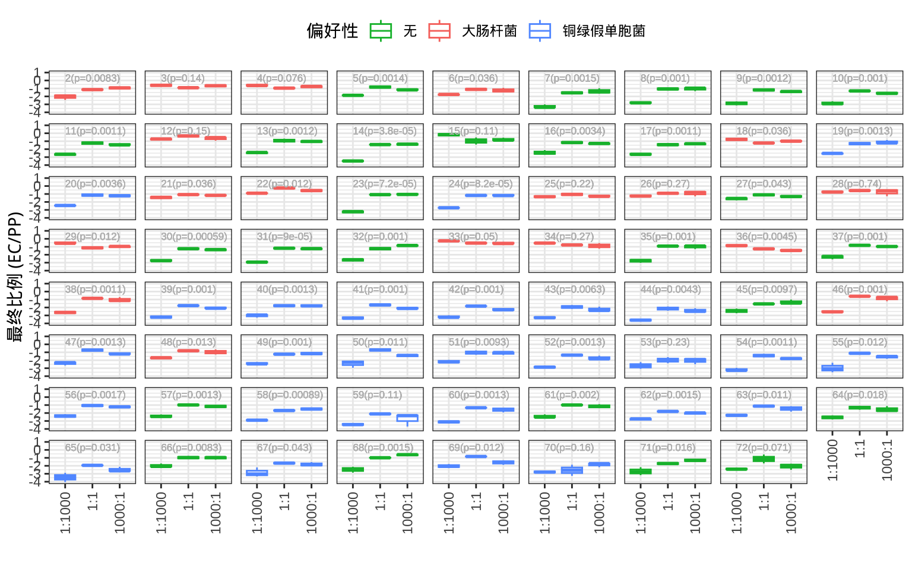
12.13 图 3. 碳源偏好性克服初始比例
plots <- lapply(c("EC","PP"),function(x){
d <- biolog_mono_24h %>%
left_join(carbon_name) %>%
filter(prefer == x)
ggplot(d,aes(carbon_source,A590,fill=species)) +
geom_boxplot() +
labs(y="CUE",x="") +
# coord_flip() +
theme(legend.position = c(0.5,0.9),
legend.direction = "horizontal",
legend.text = element_text(face = "italic"),
legend.title = element_blank(),
axis.text.x = element_text(angle = 60, hjust = 1,vjust = 1))
})ratio0_labeller <- function(x){
name_of_ratio0 <- c("P. putida","1:1000","1:1","1000:1","E. coli")
names(name_of_ratio0) <- c("none","less","equal","more","all")
return(as.character(name_of_ratio0[x]))
}
prefer_labeller <- function(x){
name_of_prefer <- c("None","E. coli","P. putida")
names(name_of_prefer) <- c("None","EC","PP")
return(as.character(name_of_prefer[x]))
}
p1 <- ggplot(merged,aes(x=prefer,y=ratio1)) +
geom_boxplot() +
facet_wrap(~ratio0,
labeller = labeller(ratio0 = ratio0_labeller)) +
scale_x_discrete(breaks=c("None","EC","PP"),labels=c("None","E. coli","P. putida")) +
theme(axis.text.x = element_text(face = "italic",
angle = 60,
hjust = 1,
vjust = 1)) +
stat_compare_means(method="wilcox.test",comparisons = list(c("EC","None"),c("None","PP"),c("EC","PP")),size=3) +
labs(x="Carbon Source Preference", y="Final Ratio (EC/PP)") +
ylim(c(NA,1.5))
prefer_labeller <- function(x){
name_of_prefer <- c("None","E. coli","P. putida")
names(name_of_prefer) <- c("None","EC","PP")
return(as.character(name_of_prefer[x]))
}
p2 <- ggplot(merged,aes(x=ratio0,y=ratio1)) +
geom_boxplot() +
facet_wrap(~prefer, labeller = labeller(prefer = prefer_labeller)) +
theme(strip.text = element_text(face = "italic")) +
stat_compare_means(method="wilcox.test",comparisons = list(c("less","equal"),c("equal","more"),c("less","more")),size=3) +
scale_x_discrete(breaks=c("less","equal","more"),labels=c("1:1000","1:1","1000:1")) +
theme(axis.text.x = element_text(angle = 60, hjust = 1,vjust = 1)) +
labs(x="初始比例 (EC/PP)", y="最终比例 (EC/PP)") +
ylim(c(NA,1.5))plot_grid(plot_grid(plots[[1]] + ylim(NA,0.7),
plots[[2]]+ ylim(NA,2),
labels = "AUTO",
rel_widths = c(18,27),
ncol = 2,align = "h"),
plot_grid(p1,p2,labels = c("C","D"),ncol = 2),
ncol = 1,
rel_heights = c(5,4))
#ggsave("ratio/figures/figure 3.tiff",path="ratio/figures")
#export::graph2ppt(file="ratio/figures.pptx",append=TRUE)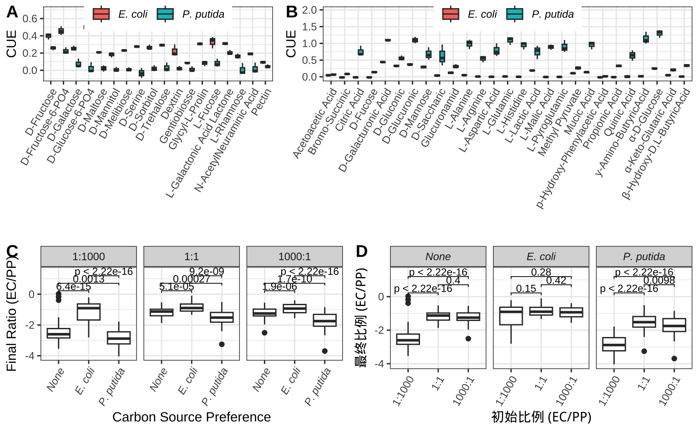
12.14 初始比例调控碳源利用谱
12.14.1 图 S3. 单培养和共培养的比较
p_cue <- ggplot(biolog_24h,aes(ratio0,A590)) +
geom_boxplot() +
geom_hline(aes(yintercept = median(A590)),lty=2,color="firebrick") +
scale_x_discrete(breaks=c("none","less","equal","more","all"),
labels=c("P. putida","1:1000","1:1","1000:1","E. coli")) +
theme(axis.text.x = element_text(angle = 60, hjust = 1,vjust = 1)) +
geom_text(aes(ratio0,y,label=y),
inherit.aes = F,
data = biolog_24h %>% group_by(ratio0) %>%
summarise(y=median(A590)),
vjust=-0.3) +
labs(x="Initial Ratio (EC/PP)",y="CUE")# 在PCA中添加置信区间
add_ellipase <- function(p, x="PC1", y="PC2", group="group",
ellipase_pro = 0.95,
linetype="dashed",
colour = "black",
lwd = 1,...){
obs <- p$data[,c(x,y,group)]
colnames(obs) <- c("x", "y", "group")
ellipse_pro <- ellipase_pro
theta <- c(seq(-pi, pi, length = 50), seq(pi, -pi, length = 50))
circle <- cbind(cos(theta), sin(theta))
ell <- plyr::ddply(obs, 'group', function(x) {
if(nrow(x) <= 2) {
return(NULL)
}
sigma <- var(cbind(x$x, x$y))
mu <- c(mean(x$x), mean(x$y))
ed <- sqrt(qchisq(ellipse_pro, df = 2))
data.frame(sweep(circle %*% chol(sigma) * ed, 2, mu, FUN = '+'))
})
names(ell)[2:3] <- c('x', 'y')
ell <- plyr::ddply(ell, plyr::.(group) , function(x) x[chull(x$x, x$y), ])
p <- p + geom_polygon(data = ell,
aes(x=x,y=y,group = group),
colour = colour,
linetype=linetype,
lwd =lwd,
inherit.aes = F,
...)
return(p)
}library(vegan)
pca <- rda(t(M_A590_24h))
percent_var <- pca$CA$eig/pca$tot.chi
df <- scores(pca)$sites %>%
as.data.frame() %>%
tibble::rownames_to_column(var="sample") %>%
separate(sample,c("ratio0","rep"),sep="-",remove = F)
df$ratio0 <- factor(df$ratio0,
levels = c("none","less","equal","more","all"),
labels = c("P. putida","1:1000","1:1","1000:1","E. coli"))
group <- cutree(hclust(dist(t(M_A590_24h))),k=3)
clustered_group <- as.data.frame(group) %>% tibble::rownames_to_column(var = "sample")
df = df |> left_join(clustered_group)
p <- ggplot(df, aes(PC1,PC2,label=ratio0,color=ratio0))+
geom_point(size=3,show.legend = F) +
scale_color_manual(values = brewer.pal(9,"YlOrRd")[5:9],name="初始比例")+
xlab(paste0("PC1: ", round(percent_var[1] * 100), "% 方差")) +
ylab(paste0("PC2: ", round(percent_var[2] * 100), "% 方差")) +
annotate("text", x = -.125, y = .9, label = "铜绿假单胞菌",
colour = brewer.pal(9,"YlOrRd")[5], size = 4, fontface = "italic") +
annotate("text", x = -.25, y = .25, label = "1:1000", size = 4,
colour = brewer.pal(9,"YlOrRd")[6]) +
annotate("text", x = -.8, y = -1, label = "大肠杆菌",
colour = brewer.pal(9,"YlOrRd")[9], size = 4, fontface = "italic") +
annotate("text", x = 1, y = -.2, label = "1:1", size = 4,
colour = brewer.pal(9,"YlOrRd")[7]) +
annotate("text", x = .45, y = -.35, label = "1000:1", size = 4,
colour = brewer.pal(9,"YlOrRd")[8])
p_pca <- add_ellipase(p,alpha=0.1,show.legend = F,lwd=1)plot_grid(p_cue,p_pca,ncol = 2,labels = c("A","B"),rel_widths = c(7,10))
#ggsave("ratio/figures/figure 4.tiff",path="ratio/figures")
#export::graph2ppt(file="ratio/figures.pptx",append=TRUE)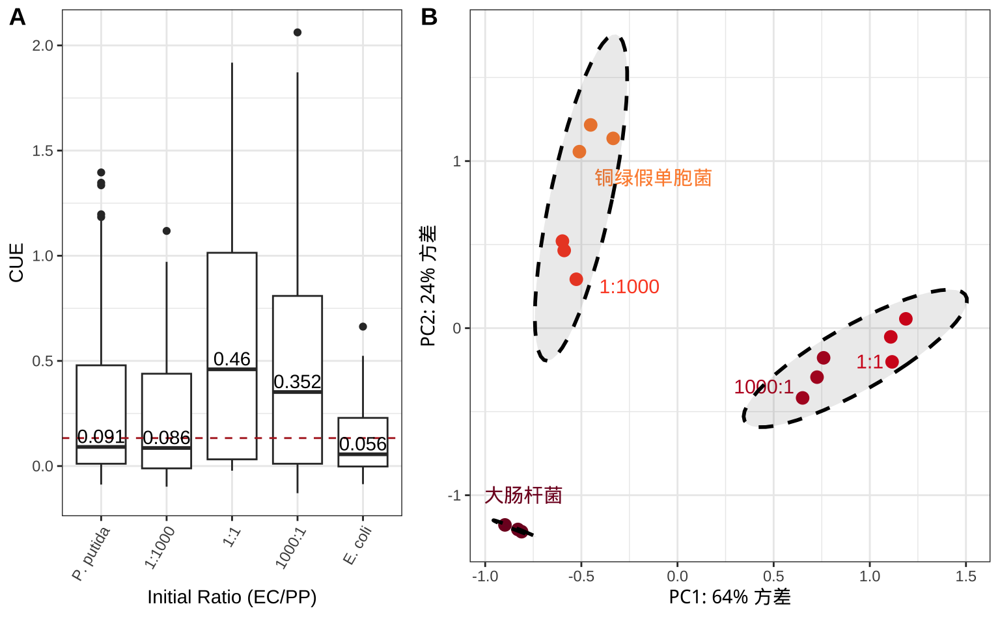
12.15 图4: 初始比例影响共培养的CUE
anno_carbon_group <- carbon_group %>%
left_join(carbon_prefer) %>%
column_to_rownames(var="carbon_id") %>%
rename(Usage = usage, Preference = prefer)
colnames(M_A590_24h) <- rep(c("E. coli","1:1","1:1000","1000:1","P. putida"),each=3)
p_heatmap <- pheatmap(t(M_A590_24h),
annotation_col = anno_carbon_group[c(2,1)],
cutree_cols = 3,
# cutree_rows = 3,
fontsize_col = 6,
silent = T)图5. 九种U2碳源培养物的CUE(A)和最终比例(B)(从左到右,从上到下)。
biolog_24h_U2 <- left_join(biolog_24h,carbon_group) %>% filter(usage=="U2")
hsd_group <- lapply(unique(biolog_24h_U2$carbon_id), function(x){
m <- aov(A590~ratio0,data=filter(biolog_24h_U2,carbon_id==x))
library(agricolae)
g <- HSD.test(m,"ratio0",group=TRUE)$groups
d <- rownames_to_column(g,var="ratio0")
d$carbon_id <- x
return(d[-2])
})
hsd_group <- do.call("rbind",hsd_group)
hsd_group$ratio0 <- factor(hsd_group$ratio0,
levels = c("none","less","equal","more","all"))
# 在箱线图顶部添加组标签
hsd_group <- biolog_24h_U2 %>% group_by(ratio0,carbon_id) %>% summarize(q3=quantile(A590)[3]) %>% left_join(hsd_group)u2_p1 <- ggplot(biolog_24h_U2, aes(ratio0,A590)) +
geom_boxplot() +
geom_text(aes(x="none",y=max(A590)*1.1,label=carbon_id),color="grey",vjust=1,size=3,show.legend = F) +
geom_text(aes(x=ratio0,y=q3,label=groups),show.legend = F,
data = hsd_group,inherit.aes = F,
vjust=0,nudge_y = .2,hjust=0) +
facet_wrap(~carbon_id,ncol=5,
labeller = labeller(carbon_id=carbon_name_labeller)) +
scale_x_discrete(breaks=c("none","less","equal","more","all"),labels=c("P. putida","1:1000","1:1","1000:1","E. coli")) +
scale_y_continuous(breaks = c(0,1,2)) +
labs(x="",y="CUE") +
# ggpubr::stat_compare_means(method="aov",label="p.format") +
theme(axis.text.x = element_text(angle = 45,hjust = 1,vjust = 1),
legend.position = "top",
legend.direction = "horizontal"
)plot_grid(ggplotify::as.ggplot(p_heatmap),
u2_p1,
labels = "AUTO",ncol=1)
#ggsave("ratio/figures/figure 5.tiff",path="ratio/figures")
#export::graph2ppt(file="ratio/figures.pptx",append=TRUE)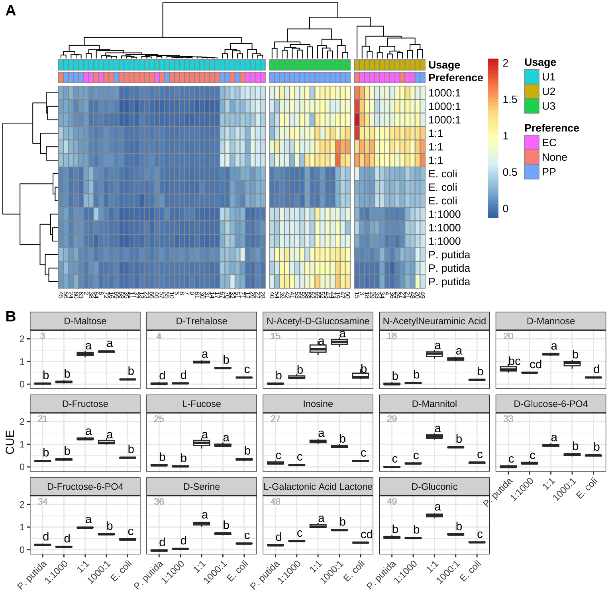
12.16 图 S4: 所有组合的CUE结果
与图4相关。
ggplot(biolog_24h, aes(ratio0,A590)) +
geom_boxplot() +
geom_text(aes(x="less",y=max(A590)*1.1,label=carbon_id),
color="grey",
vjust=1,size=3,show.legend = F) +
facet_wrap(~carbon_id,ncol=9) +
scale_x_discrete(breaks=c("none","less","equal","more","all"),labels=c("P. putida","1:1000","1:1","1000:1","E. coli")) + xlab(NULL) +
scale_y_continuous(breaks = c(0,1,2),name = "CUE") +
theme(axis.text.x = element_text(angle = 90,hjust = 1,vjust = 0.5),
legend.position = "top",
legend.direction = "horizontal",
strip.background = element_blank(), # 移除分面标签 - "strip"
strip.text = element_blank())
#ggsave("ratio/figures/figure S3.tiff",path="ratio/figures")
#export::graph2ppt(file="ratio/figures.pptx",append=TRUE)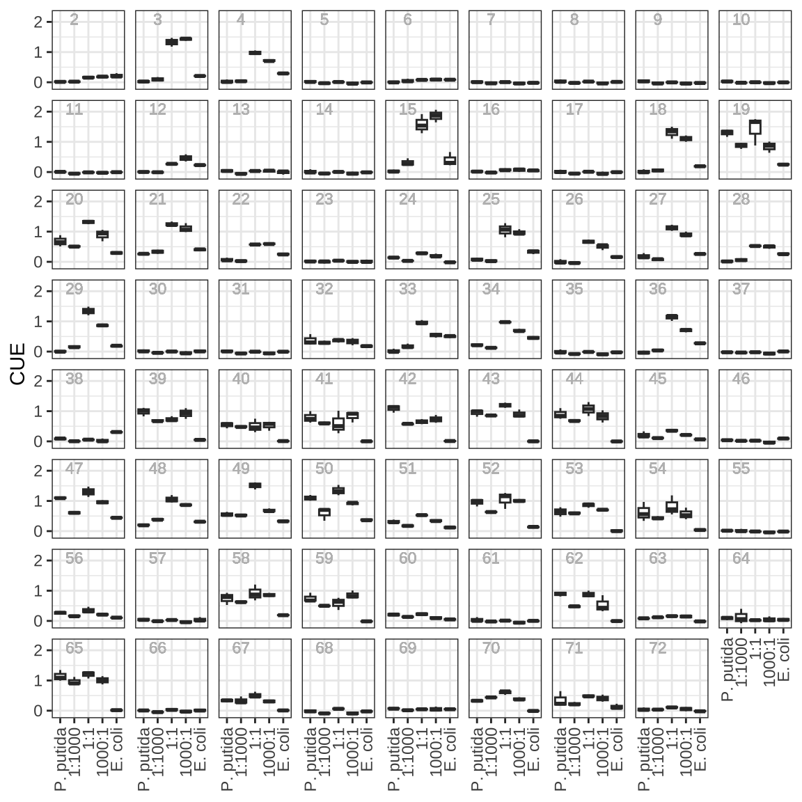
12.17 初始比例调控社会互作
社会互作模式按图1所述计算。
12.17.1 图5. 共培养中的社会互作
plots_proportion <- lapply(list(c("ratio0","social_type"),c("ratio0","usage","social_type"),c("ratio0","prefer","social_type")), function(x){
df <- merged_qpcr %>%
group_by(.dots=x) %>%
summarise(count=n()) %>%
mutate(Proportion=count/sum(count)) %>%
mutate(label=paste(round(Proportion*100),"%",sep=""))
ggplot(df,aes_string("ratio0","Proportion",fill="social_type")) +
geom_col() +
geom_text(aes(label=label),color="white",
position = position_stack(vjust=0.5),
size=3) +
scale_fill_manual(values = c("+"="firebrick","-"="royalblue","unresolved"="grey"),
labels = c("Unresolved", "Positive", "Negative"),
name="Interaction") +
theme(legend.position = "none",
legend.title = element_text(face="bold")) +
scale_x_discrete(breaks=c("less","equal","more"),labels=c("1:1000","1:1","1000:1")) +
theme(axis.text.x = element_text(angle = 60,hjust = 1,vjust = 1) ) +
xlab("")
})
legend <- get_legend(plots_proportion[[1]] + theme(legend.position = "right"))plots_population <- lapply(c("EC","PP"),function(x){
ggplot(merged_qpcr,aes_string("social_type",x)) + geom_boxplot() +
stat_compare_means(method = "wilcox.test",comparisons = list(c("unresolved","+"),c("-","+")),size=3)+
theme(axis.text.x = element_text(angle = 60,hjust = 1,vjust = 1) ) +
scale_x_discrete(labels = c("unresolved","positive","negative"),
breaks = c("unresolved","+","-")) +
labs(x="")
})plot_grid(plot_grid(plots_proportion[[1]],
plots_proportion[[2]]+ facet_wrap(~usage ),
legend,
rel_widths = c(1.8,4,1.5),
ncol = 3,
labels = c("A","B","")),
plot_grid(plots_proportion[[3]] + facet_wrap(~prefer,
labeller = labeller(prefer = prefer_labeller)) +
theme(strip.text = element_text(face = "italic")),
plots_population[[1]] + labs(y="大肠杆菌数量"),
plots_population[[2]] + labs(y="铜绿假单胞菌数量"),
labels = c("C","D","E"),
ncol = 3,
rel_widths = c(5,2,2)),
ncol = 1)
#ggsave("ratio/figures/figure 5-1.tiff",path="ratio/figures")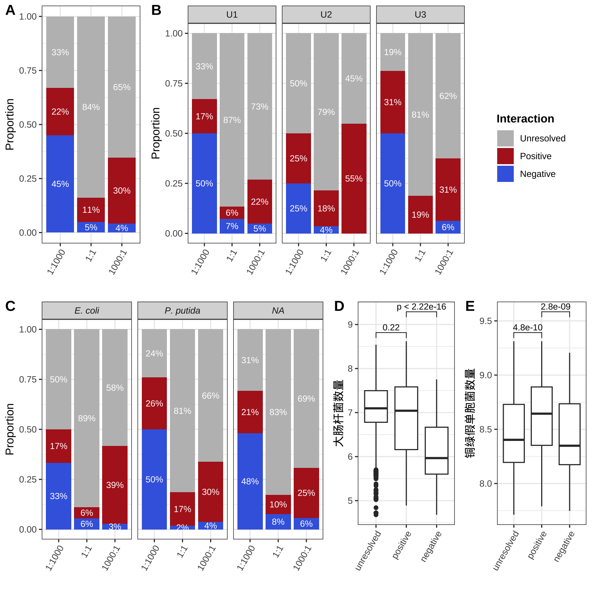
12.18 图5-1. 基于单培养和共培养两种菌的绝对密度定义的社会互作
12.19 图 S5: 所有组合的互作模式
与图5相关。
left_join(biolog_coculture_24h,social) %>%
ggplot(aes(ratio0,A590,color=social_type)) +
geom_boxplot() +
geom_text(aes(x="less",y=max(A590)*1.1,label=carbon_id),vjust=1,color="grey",size=3) +
facet_wrap(~carbon_id,ncol=9) +
scale_color_manual(values = c("+"="firebrick","-"="royalblue","unresolved"="grey"),
labels = c("negative", "positive","unresolved"),
name="Interaction: ") +
scale_y_continuous(breaks = c(0,1,2)) +
scale_x_discrete(breaks=c("less","equal","more"),labels=c("1:1000","1:1","1000:1")) +
labs(x="",y="CUE") +
theme(axis.text.x = element_text(angle = 90,hjust = 1,vjust = 0.5),
legend.position = "top",
strip.background = element_blank(), # 移除分面标签 - "strip"
strip.text = element_blank())
#ggsave("ratio/figures/figure S4.tiff",path="ratio/figures")
#export::graph2ppt(file="ratio/figures.pptx",append=TRUE)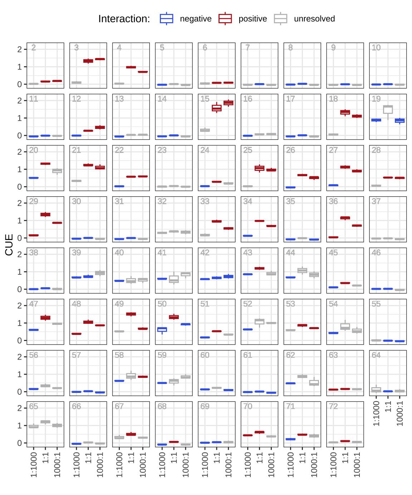
12.20 图6. U2碳源利用中的代谢耦合
knitr::include_graphics("ratio/figures/interaction_model.png")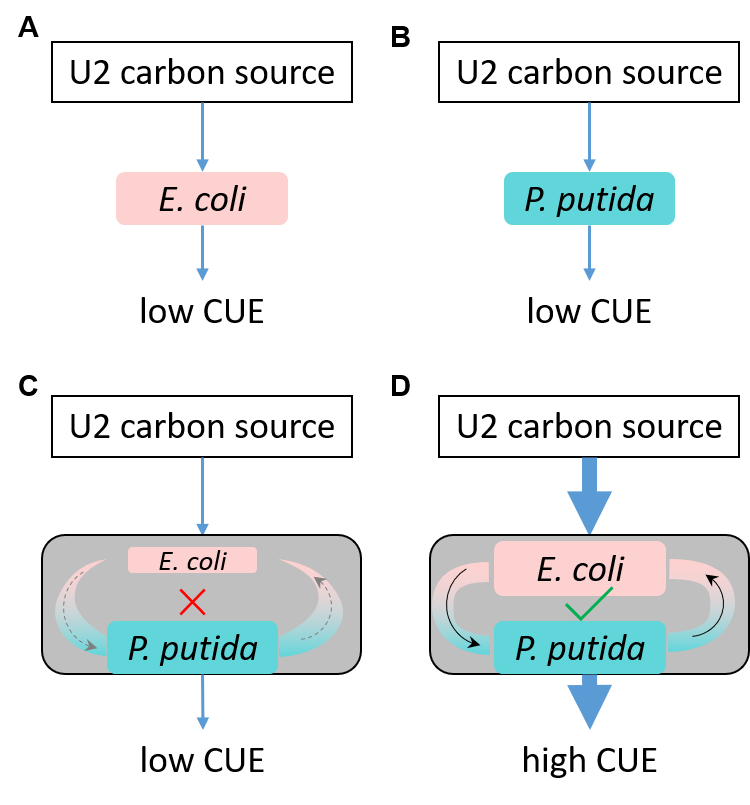
12.21 补充数据
12.21.1 生长曲线
# ggplot中显示回归曲线的公式和R^2值
source("ratio/functions/ggplot_smooth_func.R")
files <- list.files(path="ratio/data/BIOLOG/",pattern = "*.csv",full.names = T)read_BIOLOG <- function(f){
A590 <- read.csv(f,header = F,skip=18,nrows = 8)
A590 <- t(A590[,1:9]) %>% as.matrix() %>% as.vector()
A750 <- read.csv(f,header = F,skip=28,nrows = 8)
A750 <- t(A750[,1:9]) %>% as.matrix() %>% as.vector()
time <- as.numeric(str_extract(str_extract(f,"\\d+h"),"\\d+"))
if (str_detect(f,"\\d++\\.\\d+")) ratio0 <- str_extract(f,"\\d++\\.\\d+")
if (str_detect(f, "(ec|pp)")) ratio0 <- str_extract(f, "(ec|pp)")
if (str_detect(f,"-[1-3]\\D")) plate <- str_extract(str_extract(f,"-[1-3]\\D"),"[1-3]")
data.frame(plate=plate, carbon_id=1:72,time=time,ratio0=ratio0,A590=A590,A750=A750)
}
biolog <- do.call("rbind", lapply(files, read_BIOLOG))
biolog$ratio0 <- factor(biolog$ratio0,
levels = c("pp","1.1000","1.1","1000.1","ec"),
labels = c("P. putida","1:1000","1:1","1000:1","E. coli"))
biolog2 <- biolog %>%
group_by(plate,ratio0,time) %>%
mutate(A590=A590-A590[carbon_id==1],A750=A750-A750[carbon_id==1]) %>% # 将阴性对照设为零
filter(carbon_id!=1) %>%
ungroup()
df_750 <- biolog2 %>% group_by(time,ratio0,carbon_id) %>%
summarise(mean=mean(A750),std=sd(A750))
df_590 <- biolog2 %>% group_by(time,ratio0,carbon_id) %>%
summarise(mean=mean(A590),std=sd(A590))
df_590 <- df_590[!(df_590$time=="28" ),]
df_750 <- df_750[!(df_750$time=="28" ),]
dat <- df_590[853:1207, 1:5] #hour 24
dat$time <- 0; dat$mean <- 0; dat$std <- 0 #change 24h to 0h
dat$ratio0 <- factor(dat$ratio0)
da0_590 <- rbind(df_590, dat)
da0_750 <- rbind(df_750, dat)
rm(dat)ggplot( da0_750,aes(time,mean,color=ratio0,shape=ratio0,ymin=mean-std,ymax=mean+std)) +
geom_line(size=0.6) +
geom_errorbar(width=0.1) +
geom_point(size=0.8) +
xlab("Time (h)") + ylab("A750") + geom_text(aes(x=2,y=max(mean)*1.1,label=carbon_id),vjust=1,color="grey",size=4)+
facet_wrap(~carbon_id,ncol=9) + scale_y_continuous(breaks = c(0,0.5,1)) +
scale_x_continuous(breaks = seq(0, 24, by = 8),
labels = seq(0, 24, by = 8),
limits = c(0, 25))+
theme(axis.text = element_text(angle = 0,hjust = 1,vjust = 0.5, size = 10),
axis.title = element_text(size = 15), ##time(h)
legend.text = element_text(size = 15), ##1:1, 1:1000
legend.title= element_blank(), ##ratio0
#legend.key = element_rect(size = 10),
legend.position = "top",
strip.background = element_blank(), # 移除分面标签 - "strip"
strip.text = element_blank())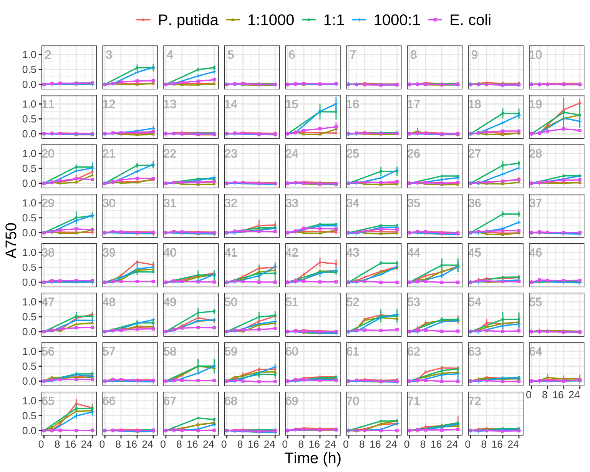
ggplot( da0_590,aes(time,mean,color=ratio0,shape=ratio0,ymin=mean-std,ymax=mean+std)) +
geom_line(size=0.6) +
geom_errorbar(width=0.1) +
geom_point(size=0.8) +
xlab("Time (h)") + ylab("A590") + geom_text(aes(x=2,y=max(mean)*1.1,label=carbon_id),vjust=1,color="grey",size=4)+
facet_wrap(~carbon_id,ncol=9) + scale_y_continuous(breaks = c(0,1,2)) +
scale_x_continuous(breaks = seq(0, 24, by = 8),
labels = seq(0, 24, by = 8),
limits = c(0, 25))+
theme(axis.text = element_text(angle = 0,hjust = 1,vjust = 0.5, size = 10),
axis.title = element_text(size = 15), ##time(h)
legend.text = element_text(size = 15), ##1:1, 1:1000
legend.title= element_blank(),## 移除ratio0
#legend.key = element_rect(size = 10),
legend.position = "top",
strip.background = element_blank(), # 移除分面标签 - "strip"
strip.text = element_blank())
#export::graph2ppt(file="ratio/figures.pptx",append=TRUE)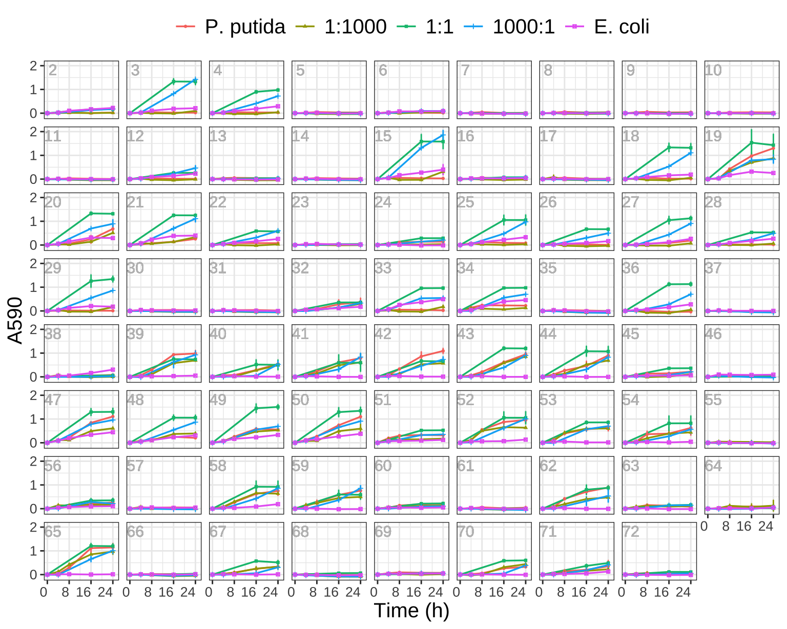
12.21.2 A590和A750的相关性
ggplot(biolog, aes(A590,A750)) +
geom_point(alpha=1/3) +
geom_smooth(method = "lm",size=1)+
stat_smooth_func(geom = "text",method = "lm",parse=T, hjust=0,xpos = 0.25,ypos = 1.4, show.legend = F)
#export::graph2ppt(file="ratio/figures.pptx",append=TRUE)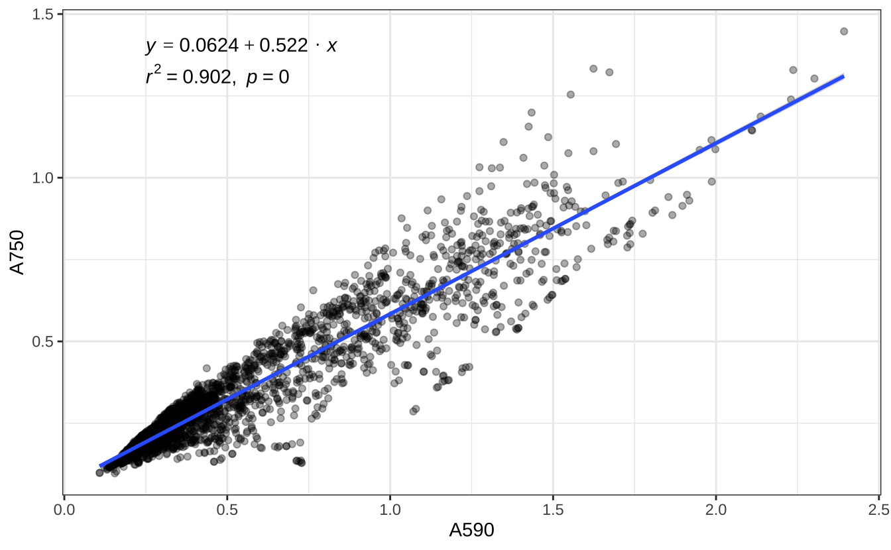
12.21.3 单细胞CUE
mono_data <- mono_data %>% rename( species = Target.Name, quantity = Quantity_mono) %>% filter(carbon_id!=1) %>%
ungroup()
mono_data$species <-factor(mono_data$species,
levels = c("PP","EC"),
labels = c("P. putida","E. coli"))
d <- merge( mono_data,biolog_mono_24h, by = c("plate", "species","carbon_id"),all=T)
d$LogCFU <- log10(d$quantity)
d2<- d[-c(4,74),]
ggplot(d2, aes(LogCFU,A590,color=species)) +
geom_point(alpha=1/3,show.legend = F) +facet_wrap(.~species,scales = 'free_x' ) +
xlab("Log10(Quantity)") + ylab("A590")+
theme(strip.text = element_text(face = "italic"))+
geom_smooth(method = "lm",size=1,show.legend = F) +
stat_smooth_func_with_pval(geom = "text",method = "lm",parse=T, hjust=0,xpos=7.0,xpos2 =7.0,ypos=2.0,ypos2 = 1.75, show.legend = F)
#export::graph2ppt(file="ratio/figures.pptx",append=TRUE)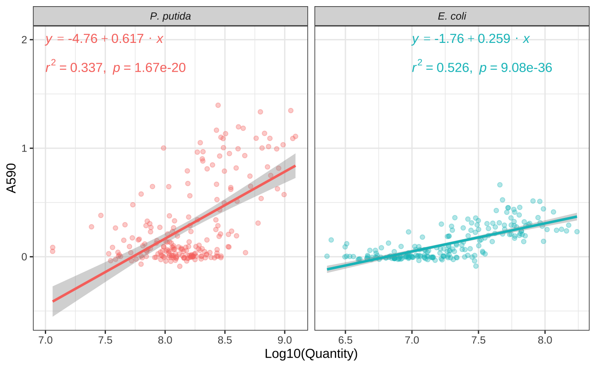